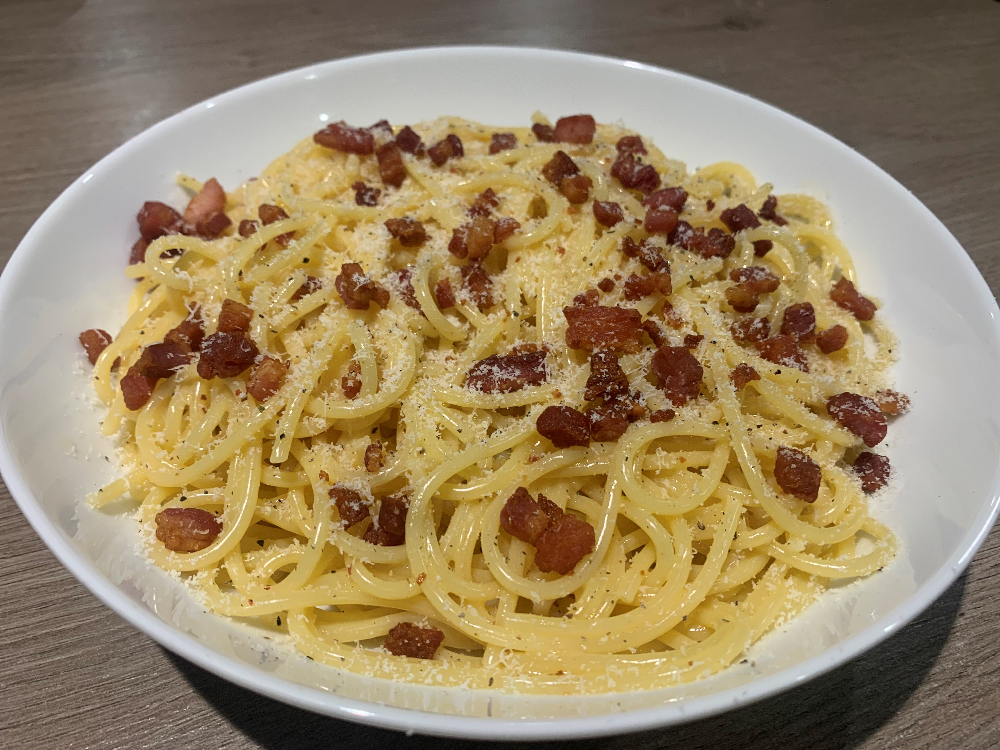

Carbonara is perhaps one of the most famous pasta dishes to come out of Italy. It originated in Rome and variations of the dish can be traced back to the 19th century, but the modern dish came to be in the middle of the 20th century. The traditional ingredients include pasta, eggs, guanciale, and hard cheese. The simplicity of this dish while maintaining a big flavour is why it is so popular all around the world.
Traditionally, carbonara is made using types of pasta which are long and thin, which enables the to cook properly. Some of these types of pasta are; fettuccine, linguine, and spaghetti (with spaghetti being the most popular).
As you can see above, this dish is so simple and requires such a small amount of ingredients. The great thing about this dish is about how elevated these ingredients become when used together in this way!
Below is my finished effort a the Carbonara. As you can see it has crisped guanciale for that crunchy texture, as well as a parmesan grating for flavour. There is no need for salt with this recipe as the guanciale is salty enough on its own, but Carbonara traditionally contains a generous amount of black pepper.
